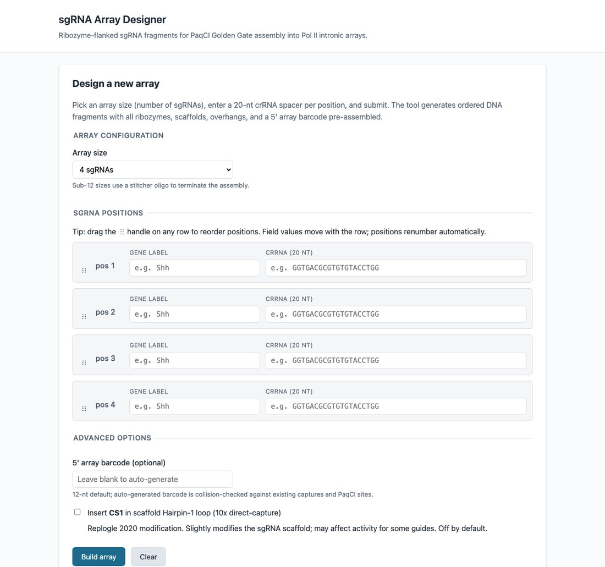
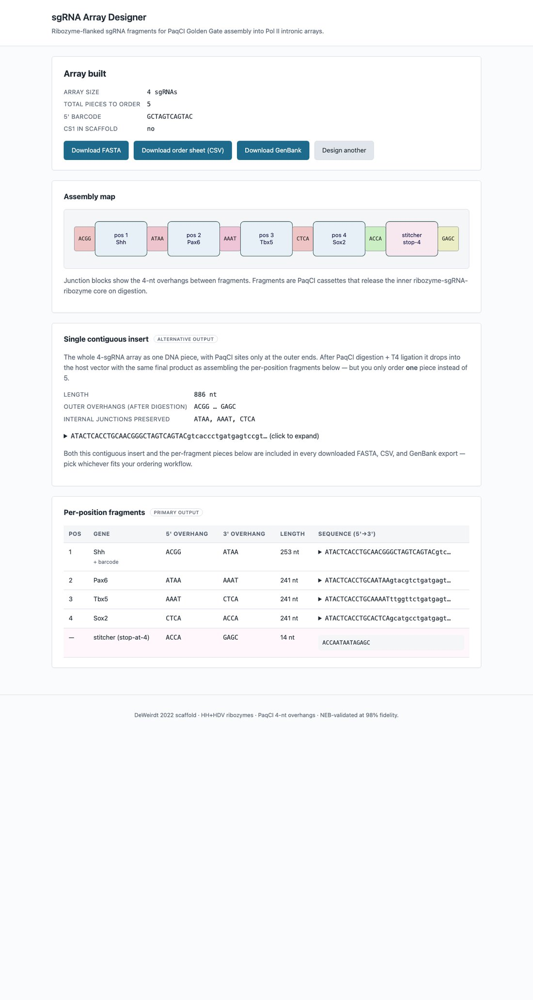

What it does
You provide 20-nt crRNA spacers and array positions; the tool returns ordered DNA fragments with all ribozymes, sgRNA scaffolds, position-specific 4-nt overhangs, and an array-identifying 5' barcode pre-assembled. One-pot PaqCI digestion + T4 DNA ligase assembles the fragments into the host vector with NEB-validated 98% predicted fidelity for the full 13-junction set.
Each fragment has the structure:
5' pad │ CACCTGC │ N │ overhang │ HH stem-I │ HH core │ crRNA │ scaffold │ HDV │ overhang │ N │ GCAGGTG │ 3' padTotal ordered DNA per fragment: ~250 bp (gBlock / oligo pool friendly). Or, if you'd rather order one piece than many, the whole array also exports as a single PaqCI-flanked gBlock with the same final cloned product.
See it in action


Why intronic + ribozyme-flanked?
The array sits in a host gene's intron and is transcribed by Pol II as part of the pre-mRNA. Hammerhead and HDV ribozymes self-cleave at both ends of every sgRNA in the array, releasing mature 5'/3' ends that load into Cas9. This bypasses the Pol III length limits and termination signals that constrain conventional U6-driven sgRNAs, and lets you co-express the array with a Cas9 cassette from a single Tol2-integrated mRNA.
Validated design constraints
| Component | Value | Source |
|---|---|---|
| sgRNA scaffold | DeWeirdt 2022 (76 nt) | 10.1038/s41467-022-33024-2 |
| HH catalytic core | 37 nt, constant; per-crRNA Stem-I | Host vector verified |
| HDV ribozyme | 68 nt, constant | Host vector verified |
| Type IIs enzyme | PaqCI, 4-nt 5' overhang | NEB R0745 |
| Overhang fidelity | 98% predicted (full 13-junction set) | NEB Golden Gate Assembly Tool |
| Optional CS1 (10x direct capture) | 22 nt, Hairpin-1 loop | 10.1038/s41587-020-0470-y |
Cite
Archived on Zenodo:
10.5281/zenodo.21053290.
A machine-readable citation lives in
CITATION.cff
— GitHub auto-renders it in the repo sidebar.
@software{currie_sgrna_array_designer,
author = {Currie, Joshua},
title = {sgRNA Array Designer},
url = {https://github.com/currie-wfu/sgRNA-array},
year = {2026},
version = {0.1.0},
doi = {10.5281/zenodo.21053290}
}Use locally
git clone https://github.com/currie-wfu/sgRNA-array.git
cd sgRNA-array
pip install -e ".[web]"
python -m pytest tests/ # 63 tests
python -m sgrna_array.cli build inputs.csv -o out/
flask --app webapp.app run --debug # local UI on http://localhost:5000